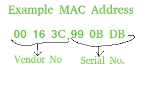

MAC address also known as physical address is the unique identifier that is assigned to the NIC (Network Interface Card) of the computer. NIC helps in connection of a computer with other computers in the network. MAC address is unique for all the NIC’s.
Uses of MAC address :
- Useful in places where IP address change frequently. Helps network admin. to get information regarding network traffic.
- Helps us to configure which computers can be connected to our computers. By this way we can filter potential spam/virus attacks.
- Helps in uniquely identifying computers from other computers around the world.

This article aims at extracting MAC address of computer using Python.
Method 1 : Using uuid.getnode()
getnode() can be used to extract the MAC address of the computer. This function is defined in uuid module.
The illustrated code given below shows how to generate a UUID for a given host, identified by its MAC address, using the uuid1() function.
# Python Program to compute # MAC address of host # using UUID module import uuid # printing the value of unique MAC # address using uuid and getnode() function print (hex(uuid.getnode()))
Output :
0x163e990bdb
Drawback :
- The visible drawback is that the output is not in the formatted form.
Method 2 : Using getnode() + format() [ for better formatting ]
# Python 3 code to print MAC
# in formatted way.
import uuid
# joins elements of getnode() after each 2 digits.
print ("The MAC address in formatted way is : ", end="")
print (':'.join(['{:02x}'.format((uuid.getnode() >> ele) & 0xff)
for ele in range(0,8*6,8)][::-1]))
Output :
The MAC address in formatted way is : 00:16:3e:99:0b:db
Drawback :
- This code appears to be complex.
Method 3 : Using getnode() + findall() + re() [ for reducing complexity ]
# Python 3 code to print MAC
# in formatted way and easier
# to understand
import re, uuid
# joins elements of getnode() after each 2 digits.
# using regex expression
print ("The MAC address in formatted and less complex way is : ", end="")
print (':'.join(re.findall('..', '%012x' % uuid.getnode())))
Output :
The MAC address in formatted and less complex way is : 00:16:3e:99:0b:db